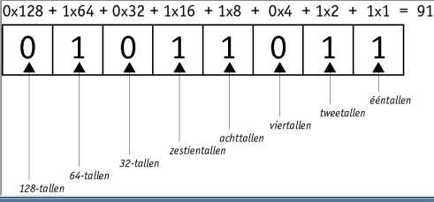

Het binair stelsel is een manier van cijfers noteren dat door computers gebruikt wordt voor computers wordt het gebruikt om allemaal verschillende dingen te noteren zoals kleuren, lichtintensiteit of gewoon cijfers
Het binair stelsel werkt op basis van nullen en enen, uit of aan.
Waarbij in de bekende notatie elke stap met een factor van tien toenemen 1=1 11=10+1 121=100+20+1 werkt binair op een factor van 2 1=1 10=101 121(111001) = 64+32+16+8+0+0+1 waarbij elke stap 2 met een factor van 1 omhoog gaat.
hier is een spel om het uit te testen ----->

https://www.youtube.com/watch?v=_xgUk845H_g
Ik heb dit filmpje voral gekozen omdat hij het uitlegd zond een lange intro en snel je de informatie geeft die je zoekt.